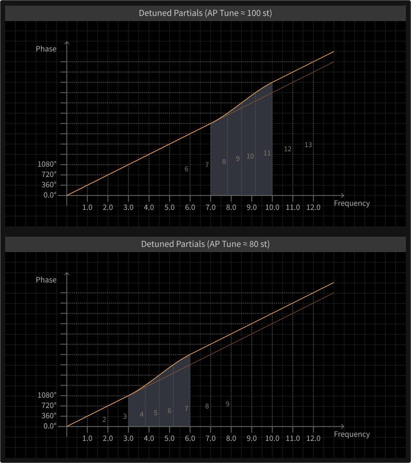
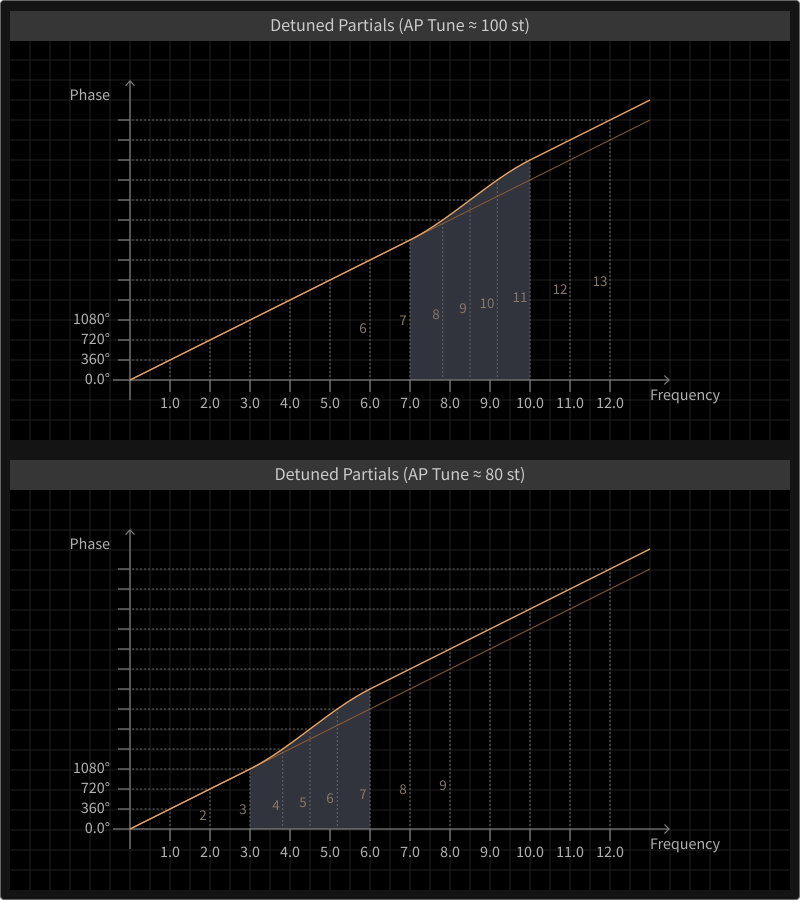

Comb Filter

The branch signals (A, B) are provided as sources for two different filter units, the first of which is the „Comb Filter“. It is an accurately tunable delay with a versatile local feedback loop, fed by an adjustable crossfade mix of both branch signals.
The term „Comb“ describes the effect of a signal being combined with a delayed version of itself, leading to phase interferences (which can be constructive or destructive, mainly depending on the delay time). Certain harmonics of the input signal can be amplified or canceled, so the spectrum is affected.
Furthermore, the term „tunable“ refers to the relationship between the delay time of signal repetitions and a perceived tonal frequency, which emerges when the delay time is sufficiently small (smaller times produce higher frequencies, as usual). The „Pitch“ parameter of the Comb Filter can be sensitive to Key Tracking and the influence of Envelope C.
The delayed signal is passed to the local feedback branch, which includes two filter components. At first, a two pole allpass filter is applied, which has a tunable frequency which can be sensitive to Key Tracking and the influence of Envelope C and a resonance. Allpass filters do not affect the amplitudes of certain frequency components (as high- or lowpass filters do), but they will affect the phases of these components, which are comparable to individual delay times. Below the (center) frequency, the phase shift is minimal (zero), rising to 180 degrees at the frequency and then to 360 degrees above the frequency. The Resonance parameter defines the slope of that shift. This mechanism has a profound effect on the signal spectrum, as it can both create and destroy harmonic signal components.
The allpass filter is followed by a lowpass filter, damping higher frequency components according to a tunable pitch parameter which can be sensitive to Key Tracking and the influence of Envelope C. The damping effect is closely related to acoustic processes (as substances like air have this property). It also affects the persistence of the local feedback.
The amount of feedback determines how long it takes for the feedback to disappear after the input signal has faded out. This exponential process is referred to as the „Decay Time“, which can be sensitive to Key Tracking (modeling a tendency some musical instruments possess, like strings tend to dampen faster with higher notes).
The Decay parameter is bipolar, as negative feedback amounts can cancel every second repetition, effectively tuning the signal down by one octave. The signal of the Gate envelope can also be applied to the local feedback loop, reducing the amount to a certain degree when a key is released (so the Comb Filter feedback only remains for sustained notes).
The delay time can additionally be modulated by a crossfade mix of both branches, determined by a „Phase Modulation“ parameter (as mentioned, in certain scenarios, delay times and phases can closely relate).
So in a general sense, the Comb Filter can act as a tunable, delay based resonator that can strongly alter the spectrum of the incoming signal due to its integrated allpass filter.
The following diagram shows a simplified frequency response for the Comb Filter. Consider a tonal signal (with a clear fundamental frequency) which feeds the Comb Filter. The Comb Filter output is added to the signal (upper graph) or subtracted from the signal (lower graph).
Both graphs show the typical, generalized frequency response of a comb effect, as shown by the periodical peaks. The width of the peaks depends on the Comb Filter's pitch parameter (equivalent to a delay time), meaning that certain signal frequency components will be attenuated and other components will be amplified, depending on the delay time.
In addition, when subtracting the Comb Filter signal from the incoming signal, the peaks are shifted, and the emerging comb tone will be lowered by one octave.
 
